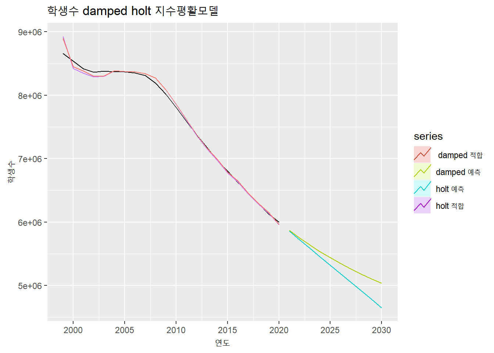
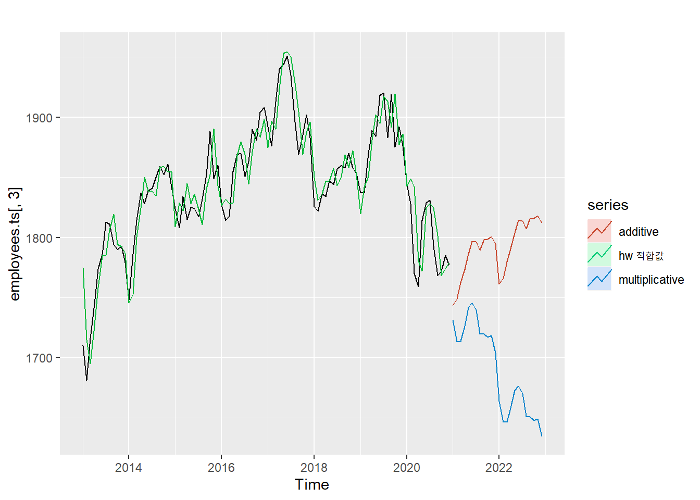
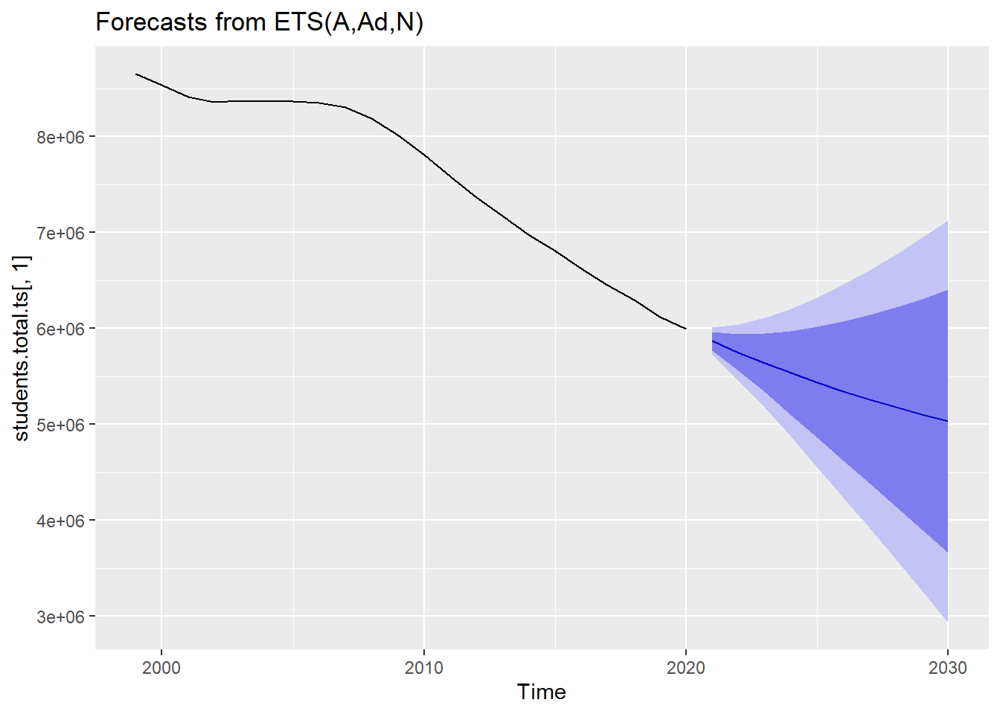
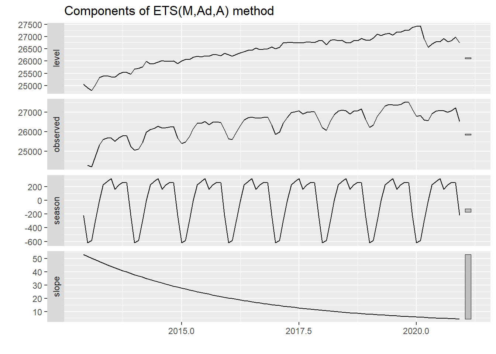

6.3 지수 평활(Exponential Smoothing) 모델
지수평활 모델은 1950년대에 제안된 모델로 랜덤 워크(Random Walk) 모델과 같이 시계열 적으로 최근의 값이 유지될 확률이 크다는 점에서 나온 모델이다. 다만 랜덤 워크 모델과 같이 마지막 값에 모든 가중치를 둬서 일정하게 유지하는 것이 아닌 현재와 가까운 과거에 더 많은 가중치를 주고 이들의 이동 평균값을 구해서 예측하는 방법이다.10
최근의 데이터에 가중치를 높게 주기 때문에 추세, 계절성, 순환성이 심하지 않은 단기 데이터의 모델링에 적합한 방법이다. 추세나 계절성이 없는 데이터에 적합한 ’단순 지수평활 모델(Simple Exponential Smoothign), 추세가 있는 데이터에 적합한 홀트(Holt) 모델, 추세와 계절성이 있는 데이터에 적합한 홀트-윈터(Holt-Winter) 모델 등이 있다.
지수 평활 모델에서 핵심적인 변수는 평활 계수이다. 평활 매개변수는 앞서 설명한 현재와 가까운 과거에 할당하는 가중치를 의미한다. 평활 매개변수은 보통 0에서 1사이의 변수인데 홀트 모델이나 홀트-윈터 모델에서는 추가적인 계수가 추가될 수 있다. 이고 이 가중치를 어떻게 설정하는 가에 따라 예측 모델의 성능도 달라질 수 있다.
필자는 처음 이 모델을 접했을때 왜 지수(Exponential)과 평활(Smoothing) 이라는 이름을 사용했는지 궁금했다. 평활 매개변수를 설명하는 과정에서 명칭에서 지수를 붙인 이유는 설명이 되겠지만 아직도 평활이라는 이름을 붙인 이유는 명쾌하게 이해되지는 않는다. 시계열 데이터에 대한 추세선을 부드럽게, 스무딩하게 만드는 모델이라고 생각이 되나 사실 홀트-윈터 모델을 보면 별로 부드럽지 않다는 느낌이 들어서 이 부분에 대해 잘 아시는 분은 알려주시길 부탁드린다.
6.3.1 단순 지수 평활 모델(Simple Exponentail Smoothing Model)
단순 지수 평활 모델은 추세, 계절성 등의 시계열적 특성이 비교적 약한 데이터에 적합한 예측 모델이다. 단순 지수 평활 모델을 사용하기 위해서는 우선 평활 계수를 설정해아한다.
평활 계수는 과거치에 대한 가중치로 현재에 가장 가까운 첫번째 과거 데이터에 대한 가중치이다. 이후 가중치 들은 1에서 가중치를 뺀 가중치(1-평활계수)로 설정하고 과거로 계속 갈수록 (1-평활계수)를 계속 곱해서 가중치를 할당한다. 평활 계수를 0.5로 가정하고 학생수 예에 적용해 보면 다음의 표와 같이 가중치가 설정되게 된다. 평활 계수가 지수형태로 계산되기 때문에 평활계수의 합은 1이 될 수 없다.
| 연도 | 가중치(평활계수 = 0.5) |
|---|---|
| 2020 | 0.5 |
| 2019 | 0.25 = (1 - 0.5) |
| 2018 | 0.125 = (1 - 0.5) * (1 - 0.5) |
| 2017 | 0.0625 = (1 - 0.5) * (1 - 0.5) * (1 - 0.5) |
| … | … |
6.3.1.1 forecast::ses() 함수
단순 지수 평활 모델을 적용하는 방법은 forecast 패키지의 ses() 함수를 사용하면 모델을 구축할 수 있다. ses() 함수에서는 평활 계수를 alpha 매개변수를 통해 설정할 수 있지만 설정하지 않으면 자동으로 계산하여 설정해준다. ses() 함수는 뒤에서 설명하는 홀트 모델, 홀트-윈터 모델도 beta와 gamma 매개변수를 통해 생성할 수 있다. ses() 함수를 통해 생성되는 모델은 몇가지 특성값을 가지는데 앞에서 설명한 평활계수가 alpha로 표현되고 초기상태값인 l 값이 나타난다. 단순 지수 평활 모델은 한단계씩 예측해나가는 방법(One Step Forecast)이기 때문에 초기값인 l값부터 시작하여 한단계 앞 값을 예측하고 또 다음 단계를 예측하는 방법으로 수행된다. l 값을 산출하는 방법은 Rob Hyndman의 저서에서 확인할 수 있다.11 이는 ses() 모델을 summary() 함수를 통해 실행시키면 확인이 가능하다.
### 전체 학생수에 대한 Simple Exponential Smoothing
ses(students.total.ts[,1])## Point Forecast Lo 80 Hi 80 Lo 95 Hi 95
## 2021 5995252 5786909 6203594 5676619 6313884
## 2022 5995252 5700626 6289878 5544660 6445843
## 2023 5995252 5634416 6356087 5443401 6547102
## 2024 5995252 5578598 6411905 5358035 6632468
## 2025 5995252 5529421 6461082 5282825 6707678
## 2026 5995252 5484962 6505542 5214830 6775673
## 2027 5995252 5444077 6546427 5152302 6838201
## 2028 5995252 5406022 6584481 5094103 6896401
## 2029 5995252 5370280 6620223 5039440 6951063
## 2030 5995252 5336474 6654029 4987739 7002765autoplot(students.total.ts[,1]) +
autolayer(fitted(ses(students.total.ts[,1])), series = 'ses 적합값') +
autolayer(ses(students.total.ts[,1]))
summary(ses(students.total.ts[,1]))##
## Forecast method: Simple exponential smoothing
##
## Model Information:
## Simple exponential smoothing
##
## Call:
## ses(y = students.total.ts[, 1])
##
## Smoothing parameters:
## alpha = 0.9999
##
## Initial states:
## l = 8394600.8229
##
## sigma: 162570.5
##
## AIC AICc BIC
## 599.8562 601.1896 603.1294
##
## Error measures:
## ME RMSE MAE MPE MAPE MASE ACF1
## Training set -109072.2 155004.8 134671.7 -1.552769 1.849053 1.047911 0.4105529
##
## Forecasts:
## Point Forecast Lo 80 Hi 80 Lo 95 Hi 95
## 2021 5995252 5786909 6203594 5676619 6313884
## 2022 5995252 5700626 6289878 5544660 6445843
## 2023 5995252 5634416 6356087 5443401 6547102
## 2024 5995252 5578598 6411905 5358035 6632468
## 2025 5995252 5529421 6461082 5282825 6707678
## 2026 5995252 5484962 6505542 5214830 6775673
## 2027 5995252 5444077 6546427 5152302 6838201
## 2028 5995252 5406022 6584481 5094103 6896401
## 2029 5995252 5370280 6620223 5039440 6951063
## 2030 5995252 5336474 6654029 4987739 7002765ses(students.total.ts[,1], alpha = 0.5)## Point Forecast Lo 80 Hi 80 Lo 95 Hi 95
## 2021 6143847 5780270 6507425 5587804 6699891
## 2022 6143847 5737355 6550339 5522172 6765523
## 2023 6143847 5698558 6589137 5462836 6824859
## 2024 6143847 5662880 6624815 5408271 6879424
## 2025 6143847 5629671 6658023 5357483 6930212
## 2026 6143847 5598481 6689213 5309782 6977913
## 2027 6143847 5568981 6718713 5264665 7023029
## 2028 6143847 5540922 6746772 5221753 7065941
## 2029 6143847 5514113 6773582 5180752 7106943
## 2030 6143847 5488399 6799296 5141425 7146269ses(students.total.ts[,1], alpha = 0.5) %>% autoplot()
### 전체 취업자수에 대한 Simple Exponential Smoothing
autoplot(employees.ts[,2]) +
autolayer(fitted(ses(employees.ts[,2])), series = 'ses 적합값') +
autolayer(ses(employees.ts[,2]))### 코로나 신규확진자수(0-9세)에 대한 Simple Exponential Smoothing
autoplot(wide.covid19.by.age.ts[,2]) +
autolayer(fitted(ses(wide.covid19.by.age.ts[,2])), series = 'ses 적합값') +
autolayer(ses(wide.covid19.by.age.ts[,2]))평활 계수가 클수록 데이터 변화에 빠르게 반응하여 예측의 감응도가 높지만 평활계수가 작으면 데이터의 변화에 느리게 반응하여 예측의 안정성이 높아진다12
### 전체 학생수의 alpha 값에 따른 적합치와 예측치의 변화
autoplot(students.total.ts[,1], color = 'black') +
autolayer(fitted(ses(students.total.ts[,1], alpha = 0.1)), series = 'alpha = 0.1') +
autolayer(ses(students.total.ts[,1], alpha = 0.1, PI = FALSE), series = 'alpha = 0.1') +
autolayer(fitted(ses(students.total.ts[,1], alpha = 0.2)), series = 'alpha = 0.2') +
autolayer(ses(students.total.ts[,1], alpha = 0.2, PI = FALSE), series = 'alpha = 0.2') +
autolayer(fitted(ses(students.total.ts[,1], alpha = 0.3)), series = 'alpha = 0.3') +
autolayer(ses(students.total.ts[,1], alpha = 0.3, PI = FALSE), series = 'alpha = 0.3') +
autolayer(fitted(ses(students.total.ts[,1], alpha = 0.4)), series = 'alpha = 0.4') +
autolayer(ses(students.total.ts[,1], alpha = 0.4, PI = FALSE), series = 'alpha = 0.4') +
autolayer(fitted(ses(students.total.ts[,1], alpha = 0.5)), series = 'alpha = 0.5') +
autolayer(ses(students.total.ts[,1], alpha = 0.5, PI = FALSE), series = 'alpha = 0.5') +
autolayer(fitted(ses(students.total.ts[,1], alpha = 0.6)), series = 'alpha = 0.6') +
autolayer(ses(students.total.ts[,1], alpha = 0.6, PI = FALSE), series = 'alpha = 0.6') +
autolayer(fitted(ses(students.total.ts[,1], alpha = 0.7)), series = 'alpha = 0.7') +
autolayer(ses(students.total.ts[,1], alpha = 0.7, PI = FALSE), series = 'alpha = 0.7') +
autolayer(fitted(ses(students.total.ts[,1], alpha = 0.8)), series = 'alpha = 0.8') +
autolayer(ses(students.total.ts[,1], alpha = 0.8, PI = FALSE), series = 'alpha = 0.8') +
autolayer(fitted(ses(students.total.ts[,1], alpha = 0.9)), series = 'alpha = 0.9') +
autolayer(ses(students.total.ts[,1], alpha = 0.9, PI = FALSE), series = 'alpha = 0.9')
6.3.1.2 stats::HoltWinters() 함수
R에서 기초 통계 패키지로 제공하는 stat 패키지에서 지수 평활 모델을 구축할 수 있는 HoltWinters() 함수를 제공한다. 다음절에서 소개하겠지만 HoltWinter 모델은 지수 평활 모델에서 추세와 계절성을 가진 데이터를 대상으로 구축하는 모델이다. 하지만 stats 패키지에서는 HoltWinters() 함수에 매개변수를 조절함으로써 단순지수평활 모델, 홀트 모델, 홀트-윈터 모델을 각각 구축할 수 있다. HoltWinters() 함수의 beta(추세), gamma(계절성) 매개변수를 모두 FALSE로 설정함으로써 단순 지수 평활 모델을 구축할 수 있다. 계산방식의 차이로 인해 forecast::ses() 함수와는 다소 차이가 난다.
### 전체 학생수에 대한 Simple Exponential Smoothing modeling
HoltWinters(students.total.ts[,1], beta = F, gamma = F)## Holt-Winters exponential smoothing without trend and without seasonal component.
##
## Call:
## HoltWinters(x = students.total.ts[, 1], beta = F, gamma = F)
##
## Smoothing parameters:
## alpha: 0.9999575
## beta : FALSE
## gamma: FALSE
##
## Coefficients:
## [,1]
## a 5995244plot(HoltWinters(students.total.ts[,1], beta = F, gamma = F))HoltWinters(students.total.ts[,1], alpha = 0.1, beta = F, gamma = F)## Holt-Winters exponential smoothing without trend and without seasonal component.
##
## Call:
## HoltWinters(x = students.total.ts[, 1], alpha = 0.1, beta = F, gamma = F)
##
## Smoothing parameters:
## alpha: 0.1
## beta : FALSE
## gamma: FALSE
##
## Coefficients:
## [,1]
## a 7207200plot(HoltWinters(students.total.ts[,1], alpha = 0.1, beta = F, gamma = F))### 전체 취업자수에 대한 Simple Exponential Smoothing modeling
plot(HoltWinters(employees.ts[,2], beta = F, gamma = F))### 코로나 신규확진자수(0-9세)에 대한 Simple Exponential Smoothing modeling
plot(HoltWinters(wide.covid19.by.age.ts[,2], beta = F, gamma = F))6.3.2 홀트(Holt) 모델
홀트(holt) 모델은 지수 평활 모델을 확장하여 추세를 반영하는 모델이다. 홀트 모델은 추세조정 지수평활법이나 이중 지수 평활법으로 해석되기도 한다. 추세를 반영하기 위해 평활 계수인 alpha와 추세 기울기 값 beta를 사용하여 모델을 세운다. 평활 계수 값과 마찬가지로 추세 기울기 값도 0과 1사이의 값을 지니고 이 값을 반영한 이동평균을 통해 예측값을 산출한다.
6.3.2.1 forecast::holt() 함수
홀트 모델은 앞선 단순 지수 평활 모델에 사용했던 ses() 함수에 추세 기울기 값인 beta 값을 추가하여 사용할 수도 있고 forecast 패키지에서 제공하는 holt() 함수를 사용하여 모델을 생성할 수도 있다. 다만 alpha, beta 등의 매개변수를 지정하지 않으면 자동 계산되어 적절한 값이 사용된다.
### 전체 학생수에 대한 Holt modeling
autoplot(students.total.ts[,1]) +
autolayer(fitted(holt(students.total.ts[,1])), series = '적합값') +
autolayer(holt(students.total.ts[,1]), series = '예측값')summary(holt(students.total.ts[,1]))##
## Forecast method: Holt's method
##
## Model Information:
## Holt's method
##
## Call:
## holt(y = students.total.ts[, 1])
##
## Smoothing parameters:
## alpha = 0.8654
## beta = 0.8654
##
## Initial states:
## l = 8966192.6427
## b = -36934.0002
##
## sigma: 82114.94
##
## AIC AICc BIC
## 571.4867 575.2367 576.9419
##
## Error measures:
## ME RMSE MAE MPE MAPE MASE ACF1
## Training set -5106.807 74275.76 46971.89 -0.0472354 0.5836661 0.365499 -0.00685211
##
## Forecasts:
## Point Forecast Lo 80 Hi 80 Lo 95 Hi 95
## 2021 5855531 5750297 5960766 5694589 6016474
## 2022 5721369 5511013 5931725 5399658 6043081
## 2023 5587207 5242397 5932018 5059866 6114549
## 2024 5453045 4951452 5954638 4685925 6220166
## 2025 5318883 4641431 5996336 4282810 6354957
## 2026 5184721 4314366 6055077 3853627 6515816
## 2027 5050559 3971709 6129409 3400601 6700518
## 2028 4916397 3614582 6218212 2925443 6907352
## 2029 4782235 3243885 6320586 2429531 7134940
## 2030 4648073 2860364 6435783 1914007 7382139### 전체 취업자수에 대한 Holt modeling
autoplot(employees.ts[,2]) +
autolayer(fitted(holt(employees.ts[,2])), series = '적합값') +
autolayer(holt(employees.ts[,2]), series = '예측값')
### 교육서비스업 취업자수에 대한 Holt modeling
autoplot(employees.ts[,3]) +
autolayer(fitted(holt(employees.ts[,3])), series = '적합값') +
autolayer(holt(employees.ts[,3]), series = '예측값')
### 코로나 신규확진자수(0-9세)에 대한 Holt modeling
autoplot(wide.covid19.by.age.ts[,2]) +
autolayer(fitted(holt(wide.covid19.by.age.ts[,2])), series = '적합값') +
autolayer(holt(wide.covid19.by.age.ts[,2]), series = '예측값')
홀트 모델은 위와 같이 일정한 증가, 감소가 나타난다. 추세가 증가 추세이면 예측값이 계속 증가하게 되고 감소추세이면 계속 감소하게 된다. 특히 감소추세 일때 계속 감소하면 어느 순간 음수값을 가질수도 있다. 따라서 감소 추세가 있는 경우 어느정도에서 감소추세를 지연시킬 필요가 있다. holt() 함수에서는 damped 매개변수를 통해 감소추세를 지연시킬 수 있다.
### 전체 학생수에 대한 Holt modeling 비교
autoplot(students.total.ts[,1]) +
autolayer(fitted(holt(students.total.ts[,1])), series = 'holt') +
autolayer(fitted(holt(students.total.ts[,1], damped = TRUE)), series = 'holt damped') +
autolayer(holt(students.total.ts[,1]), series = '예측', PI = FALSE) +
autolayer(holt(students.total.ts[,1], damped = TRUE), series = 'damped 예측', PI = FALSE)
### 전체 취업자수에 대한 Holt modeling 비교
autoplot(employees.ts[,2]) +
autolayer(fitted(holt(employees.ts[,2])), series = 'holt') +
autolayer(fitted(holt(employees.ts[,2], damped = TRUE)), series = 'holt damped') +
autolayer(holt(employees.ts[,2]), series = '예측', PI = FALSE) +
autolayer(holt(employees.ts[,2], damped = TRUE), series = 'damped 예측', PI = FALSE)
### 코로나 신규확진자수(0-9세)에 대한 Holt modeling 비교
autoplot(wide.covid19.by.age.ts[,2]) +
autolayer(fitted(holt(wide.covid19.by.age.ts[,2])), series = 'holt') +
autolayer(fitted(holt(wide.covid19.by.age.ts[,2], damped = TRUE)), series = 'holt damped') +
autolayer(holt(wide.covid19.by.age.ts[,2], h = 20), series = '예측', PI = FALSE) +
autolayer(holt(wide.covid19.by.age.ts[,2], h = 20, damped = TRUE), series = 'damped 예측', PI = FALSE)
추세 기울기 값에 따른 변동은 아래 plot과 같이 나타난다. 사실상 추세 기울기 값은 결과값에 큰 차이를 나타내지 않는다.
autoplot(employees.ts[,2]) +
autolayer(fitted(holt(employees.ts[,2], beta = 0.1)), series = 'beta = 0.1') +
autolayer(fitted(holt(employees.ts[,2], beta = 0.2)), series = 'beta = 0.2') +
autolayer(fitted(holt(employees.ts[,2], beta = 0.3)), series = 'beta = 0.3') +
autolayer(fitted(holt(employees.ts[,2], beta = 0.4)), series = 'beta = 0.4') +
autolayer(fitted(holt(employees.ts[,2], beta = 0.5)), series = 'beta = 0.5') +
autolayer(fitted(holt(employees.ts[,2], beta = 0.6)), series = 'beta = 0.6') +
autolayer(fitted(holt(employees.ts[,2], beta = 0.7)), series = 'beta = 0.7') +
autolayer(fitted(holt(employees.ts[,2], beta = 0.8)), series = 'beta = 0.8') +
autolayer(fitted(holt(employees.ts[,2], beta = 0.9)), series = 'beta = 0.9')
6.3.2.2 stats::HoltWinters() 함수
앞서 설명한 바와 같이 R에서 기초 통계 패키지로 제공하는 stat 패키지에서 홀트 모델을 구축하기 위해서는 HoltWinters() 함수를 제공한다. stats 패키지의 HoltWinters() 함수 매개변수인 gamma(계절성) 매개변수를 FALSE로 설정함으로써 홀트 모델을 구축할 수 있다. 계산방식의 차이로 인해 forecast::holt() 함수와는 다소 차이가 난다.
### 전체 학생수에 대한 Holt modeling
HoltWinters(students.total.ts[,1], gamma = F)## Holt-Winters exponential smoothing with trend and without seasonal component.
##
## Call:
## HoltWinters(x = students.total.ts[, 1], gamma = F)
##
## Smoothing parameters:
## alpha: 1
## beta : 0
## gamma: FALSE
##
## Coefficients:
## [,1]
## a 5995239
## b -122491plot(HoltWinters(students.total.ts[,1], gamma = F))HoltWinters(students.total.ts[,1], alpha = 0.1, gamma = F)## Holt-Winters exponential smoothing with trend and without seasonal component.
##
## Call:
## HoltWinters(x = students.total.ts[, 1], alpha = 0.1, gamma = F)
##
## Smoothing parameters:
## alpha: 0.1
## beta : 0.9999339
## gamma: FALSE
##
## Coefficients:
## [,1]
## a 5671013
## b -257528plot(HoltWinters(students.total.ts[,1], alpha = 0.1, gamma = F))### 전체 취업자수에 대한 Holt modeling
plot(HoltWinters(employees.ts[,2], gamma = F))### 코로나 신규확진자수(0-9세)에 대한 Holt modeling
plot(HoltWinters(wide.covid19.by.age.ts[,2], gamma = F))6.3.3 홀트-윈터(Holt-Winter) 모델
홀트-윈터(Holt-Winter) 모델은 단순 지수 평활 모델을 확장하여 추세와 계절성을 반영하는 모델이다. 홀트-윈터 모델은 ses 모델의 alpha, 홀트 모델의 beta에 계절 매개변수인 gamma까지 포함하기 때문에 삼중 지수 평활법이나 계절조정 지수 평활법이라고도 한다.
홀트-윈터 모델도 앞선 홀트 모델과 같이 ses() 함수에 추세 기울기 값인 beta 값과 계절 변수인 gamma 값을 추가하여 사용할 수도 있고 forecast 패키지에서 제공하는 hw() 함수를 사용하여 모델을 생성할 수도 있다. 다만 alpha, beta 등의 매개변수를 지정하지 않으면 자동 계산되어 적절한 값이 사용된다.
6.3.3.1 forecast::hw() 함수
홀트-윈터 모델은 가산법(additive)와 승산법(multiplicative)의 두가지 방법이 있다.
autoplot(employees.ts[,2]) +
autolayer(fitted(hw(employees.ts[,2])), series = 'hw 적합값') +
autolayer(hw(employees.ts[,2], seasonal = 'additive'), PI = FALSE, series = 'additive') +
autolayer(hw(employees.ts[,2], seasonal = 'multiplicative'), PI = FALSE, series = 'multiplicative')
summary(hw(employees.ts[,2]))##
## Forecast method: Holt-Winters' additive method
##
## Model Information:
## Holt-Winters' additive method
##
## Call:
## hw(y = employees.ts[, 2])
##
## Smoothing parameters:
## alpha = 0.9985
## beta = 0.0147
## gamma = 1e-04
##
## Initial states:
## l = 25433.0105
## b = 35.8063
## s = -214.0764 256.3016 260.68 226.9136 162.9304 313.7855
## 278.5719 219.3763 -4.9043 -297.3507 -579.3511 -622.8768
##
## sigma: 134.5373
##
## AIC AICc BIC
## 1395.828 1403.674 1439.422
##
## Error measures:
## ME RMSE MAE MPE MAPE MASE ACF1
## Training set -14.96946 122.8152 78.83536 -0.0580682 0.301646 0.2487293 0.07031624
##
## Forecasts:
## Point Forecast Lo 80 Hi 80 Lo 95 Hi 95
## Jan 2021 26132.22 25959.80 26304.64 25868.53 26395.91
## Feb 2021 26190.42 25944.97 26435.88 25815.03 26565.82
## Mar 2021 26487.18 26184.42 26789.93 26024.15 26950.20
## Apr 2021 26794.28 26442.17 27146.39 26255.78 27332.78
## May 2021 27033.23 26636.73 27429.74 26426.83 27639.63
## Jun 2021 27107.08 26669.61 27544.55 26438.02 27776.14
## Jul 2021 27156.96 26681.05 27632.87 26429.11 27884.80
## Aug 2021 27020.82 26508.41 27533.22 26237.16 27804.47
## Sep 2021 27099.44 26552.09 27646.80 26262.34 27936.55
## Oct 2021 27147.90 26566.85 27728.95 26259.27 28036.53
## Nov 2021 27158.21 26544.51 27771.91 26219.63 28096.78
## Dec 2021 26702.45 26056.97 27347.94 25715.27 27689.63
## Jan 2022 26308.32 25631.78 26984.86 25273.65 27342.99
## Feb 2022 26366.53 25659.58 27073.48 25285.34 27447.71
## Mar 2022 26663.28 25926.46 27400.09 25536.41 27790.14
## Apr 2022 26970.38 26204.17 27736.59 25798.56 28142.20
## May 2022 27209.33 26414.14 28004.53 25993.19 28425.48
## Jun 2022 27283.18 26459.36 28107.00 26023.26 28543.10
## Jul 2022 27333.06 26480.94 28185.18 26029.85 28636.27
## Aug 2022 27196.92 26316.77 28077.07 25850.85 28542.99
## Sep 2022 27275.54 26367.62 28183.47 25886.99 28664.10
## Oct 2022 27324.00 26388.51 28259.49 25893.29 28754.71
## Nov 2022 27334.31 26371.45 28297.17 25861.74 28806.88
## Dec 2022 26878.55 25888.49 27868.61 25364.38 28392.72autoplot(employees.ts[,3]) +
autolayer(fitted(hw(employees.ts[,3])), series = 'hw 적합값') +
autolayer(hw(employees.ts[,3], seasonal = 'additive'), PI = FALSE, series = 'additive') +
autolayer(hw(employees.ts[,3], seasonal = 'multiplicative'), PI = FALSE, series = 'multiplicative')
summary(hw(employees.ts[,3]))##
## Forecast method: Holt-Winters' additive method
##
## Model Information:
## Holt-Winters' additive method
##
## Call:
## hw(y = employees.ts[, 3])
##
## Smoothing parameters:
## alpha = 0.9993
## beta = 1e-04
## gamma = 1e-04
##
## Initial states:
## l = 1803.8967
## b = 1.4736
## s = 4.0914 11.645 10.8291 12.0963 5.0654 13.0499
## 15.2957 6.1821 -5.524 -14.7346 -27.3353 -30.661
##
## sigma: 22.6819
##
## AIC AICc BIC
## 1054.015 1061.862 1097.609
##
## Error measures:
## ME RMSE MAE MPE MAPE MASE ACF1
## Training set -1.794203 20.70565 16.09606 -0.1054265 0.878707 0.3190346 0.01039296
##
## Forecasts:
## Point Forecast Lo 80 Hi 80 Lo 95 Hi 95
## Jan 2021 1743.702 1714.634 1772.770 1699.246 1788.158
## Feb 2021 1748.476 1707.380 1789.571 1685.625 1811.326
## Mar 2021 1762.544 1712.216 1812.873 1685.574 1839.515
## Apr 2021 1773.212 1715.098 1831.326 1684.334 1862.090
## May 2021 1786.372 1721.398 1851.346 1687.002 1885.742
## Jun 2021 1796.939 1725.761 1868.117 1688.082 1905.797
## Jul 2021 1796.151 1719.268 1873.035 1678.568 1913.735
## Aug 2021 1789.618 1707.422 1871.813 1663.911 1915.325
## Sep 2021 1798.101 1710.916 1885.286 1664.763 1931.439
## Oct 2021 1798.296 1706.391 1890.201 1657.739 1938.853
## Nov 2021 1800.569 1704.173 1896.964 1653.144 1947.993
## Dec 2021 1794.467 1693.780 1895.153 1640.480 1948.453
## Jan 2022 1761.168 1656.364 1865.971 1600.884 1921.451
## Feb 2022 1765.941 1657.176 1874.706 1599.599 1932.283
## Mar 2022 1780.010 1667.422 1892.598 1607.821 1952.199
## Apr 2022 1790.677 1674.391 1906.964 1612.833 1968.522
## May 2022 1803.838 1683.966 1923.709 1620.510 1987.165
## Jun 2022 1814.405 1691.052 1937.757 1625.753 2003.056
## Jul 2022 1813.617 1686.878 1940.356 1619.786 2007.447
## Aug 2022 1807.083 1677.045 1937.121 1608.207 2005.960
## Sep 2022 1815.567 1682.311 1948.823 1611.769 2019.365
## Oct 2022 1815.761 1679.362 1952.160 1607.157 2024.366
## Nov 2022 1818.034 1678.562 1957.506 1604.731 2031.337
## Dec 2022 1811.932 1669.453 1954.411 1594.030 2029.834가산법은 계절성의 변화 비교적 일정하게 나타날때 사용하는 방법이고 승산법은 계절성의 진폭이 추세에 비례하여 변동이 있을때 사용하는 방법이다. 따라서 미래 예측치를 산출할 때도 가산법은 예측치가 크게 변동되지 않지만 승산법은 먼 미래일 수록 예측값이 커지게 된다.
가산법과 승산법을 사용하는 방법은 hw() 함수에서 seasonal 매개변수를 통해 설정할 수 있다. seasonal 매개변수를 ’additive’로 설정하면 가산법, ’multiplicative’를 설정하면 승산법을 사용하여 모델이 구축된다.
사실상 가산법과 승산법 중 어느 방법을 선택해야하는 지를 선택하는 방법은 시각적으로 확인하거나 다음 장에서 설명할 모델 성능 비교 방법을 통해 선택해야한다.
6.3.3.2 stats::HoltWinters() 함수
### 전체 취업자수에 대한 Holt modeling
HoltWinters(employees.ts[,2])## Holt-Winters exponential smoothing with trend and additive seasonal component.
##
## Call:
## HoltWinters(x = employees.ts[, 2])
##
## Smoothing parameters:
## alpha: 0.8076352
## beta : 0.03404805
## gamma: 1
##
## Coefficients:
## [,1]
## a 26855.065147
## b 5.905479
## s1 -696.530450
## s2 -655.242183
## s3 -383.258290
## s4 -42.097658
## s5 302.244998
## s6 336.581062
## s7 320.213201
## s8 185.326285
## s9 180.483570
## s10 233.705448
## s11 246.451216
## s12 -329.065147plot(HoltWinters(employees.ts[,2]))plot(HoltWinters(employees.ts[,3]))6.3.4 ETS 모델
ETS 모델은 Error, Trend, Season의 앞글자만 따서 만들었다고도 하고 ExponenTial Smoothing의 약자라고도 한다. 앞서 설명한 지수 평활 모델을 잔차(실제값 - 적합값)로 보정한 모델이다. ETS 모델은 모델을 구성하는 방법에 따라 여러가지 모델로 구분될 수 있다. 각 모델은 실 데이터의 측정식(measurement equation)과 측정식에서 추출된 추세, 계절성 등을 통해 추정되는 미래 예측값에 대한 상태식(state equation)에 따라 결정되는데 이를 상태공간모델(status space model)이라고 한다.13
상태공간모델에 의한 ETS 모델은 Error에 의한 가법 보정(A), 승법보정(M), 추세에 따른 가법 방법(A), 감쇄 가법 방법(Ad), 추세 없음(N), 계절성에 따른 계절성 없음(N), 가법 계절성(A), 승법 계절성(M)으로 구분된다. 이 8가지 방법을 활용하여 최종 ETS 모델을 결정할 수 있는데 모든 조합이 모델이 되지는 않는다.
forecast의 ets() 함수에는 상태공간모델을 지정할 수 있지만 ets() 함수에서 자동적으로 선정해준다. ets 모델을 autoplot에 적용시키면 각각의 성분별로 plot을 확인할 수 있다.
ets(students.total.ts[,1]) ### ETS(A,Ad,N)로 선정 error는 A, trend는 Ad, season은 N## ETS(A,Ad,N)
##
## Call:
## ets(y = students.total.ts[, 1])
##
## Smoothing parameters:
## alpha = 0.8929
## beta = 0.8929
## phi = 0.9401
##
## Initial states:
## l = 8930071.6714
## b = -36934.5936
##
## sigma: 74403.08
##
## AIC AICc BIC
## 567.8898 573.4898 574.4361ets(students.total.ts[,1]) %>% autoplot() ### 전체 학생수에 대한 ets 모델 plotingets(students.total.ts[,1]) %>% forecast() %>% autoplot() ### 전체 학생수에 대한 예측치 ploting
ets(employees.ts[,2]) ### ETS(M,Ad,A)로 모델 선정## ETS(M,Ad,A)
##
## Call:
## ets(y = employees.ts[, 2])
##
## Smoothing parameters:
## alpha = 0.9989
## beta = 1e-04
## gamma = 2e-04
## phi = 0.9744
##
## Initial states:
## l = 25055.6086
## b = 53.1073
## s = -222.3076 255.8486 261.7129 227.3178 163.5351 319.1916
## 274.8844 226.215 -5.605 -294.4144 -588.041 -618.3374
##
## sigma: 0.0045
##
## AIC AICc BIC
## 1372.968 1381.851 1419.126ets(employees.ts[,2]) %>% autoplot()
ets(employees.ts[,2]) %>% forecast() %>% autoplot()ets(wide.covid19.by.age.ts[,2]) ### ETS(A,N,N)로 모델 선정## ETS(A,N,N)
##
## Call:
## ets(y = wide.covid19.by.age.ts[, 2])
##
## Smoothing parameters:
## alpha = 0.3314
##
## Initial states:
## l = 1.2458
##
## sigma: 5.2609
##
## AIC AICc BIC
## 2731.370 2731.450 2742.501ets(wide.covid19.by.age.ts[,2]) %>% autoplot()ets(wide.covid19.by.age.ts[,2]) %>% forecast() %>% autoplot()